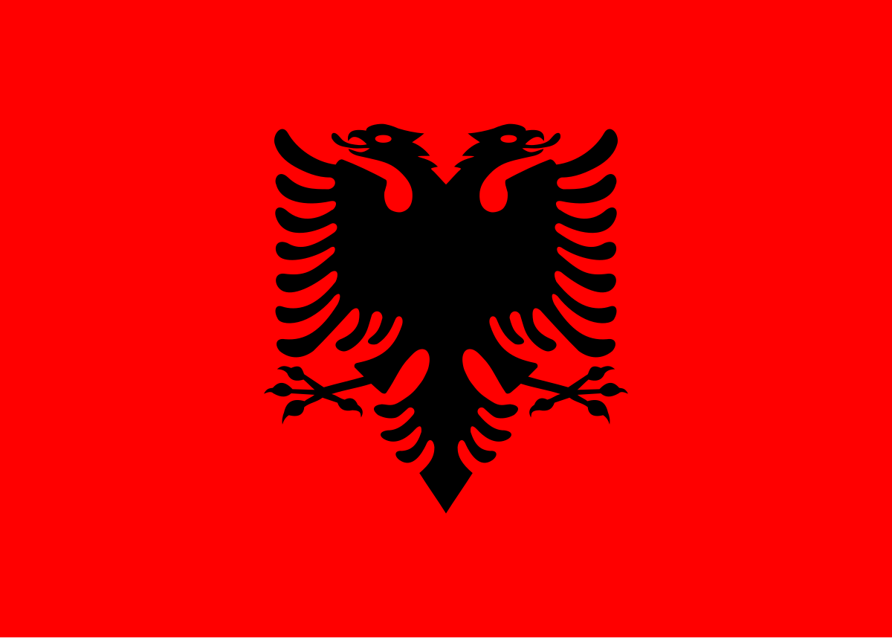

L'HISTOIRE DE L'ALBANIE
L’Albanie possède une histoire riche et mouvementée, marquée par de nombreuses influences. Habité depuis l’Antiquité par les Illyriens, le territoire passe sous domination romaine au IIe siècle av. J.-C., puis byzantine après la chute de Rome. Au Moyen Âge, l’Albanie subit plusieurs invasions avant d’être conquise par l’Empire ottoman au XVe siècle. La résistance albanaise est menée par Skanderbeg, figure emblématique du pays. Après plus de quatre siècles de domination ottomane, l'Albanie proclame son indépendance en 1912. Le XXe siècle est marqué par une période de monarchie, suivie d’un régime communiste isolé sous Enver Hoxha (1944-1985), qui transforme le pays en l’un des plus fermés du monde. Après la chute du communisme en 1991, l’Albanie entame une transition vers la démocratie et l’ouverture économique, rejoignant l’OTAN en 2009 et devenant candidate à l’Union européenne.
L’Albanie possède de nombreux atouts qui en font un pays attractif en pleine évolution. Située en Europe du Sud, elle bénéficie d’une position stratégique sur la mer Adriatique, offrant un accès privilégié aux échanges commerciaux et au tourisme. Son patrimoine naturel est remarquable, avec des plages paradisiaques sur la Riviera albanaise, des montagnes préservées idéales pour la randonnée, et des sites classés à l’UNESCO comme Butrint. Son histoire riche et sa culture unique, influencées par les civilisations illyriennes, romaines et ottomanes, en font une destination fascinante. Sur le plan économique, l'Albanie connaît une croissance dynamique, attirant les investisseurs grâce à une main-d’œuvre jeune et des réformes économiques en cours. Enfin, son coût de la vie abordable et son hospitalité chaleureuse séduisent aussi bien les touristes que les expatriés.
L’Albanie est un pays au passé mouvementé qui a su évoluer vers une modernisation rapide tout en préservant son identité. Après des siècles sous domination ottomane, suivis d’un régime communiste strict sous Enver Hoxha, le pays a amorcé une transition vers la démocratie et l’économie de marché dans les années 1990. Aujourd’hui, l’Albanie se rapproche de l’Union européenne, avec des réformes visant à renforcer ses institutions et son attractivité économique. Malgré des défis liés au développement et à l’émigration de sa jeunesse, elle bénéficie d’une croissance stable, d’infrastructures en expansion et d’une forte identité culturelle marquée par des traditions anciennes et une langue unique dans les Balkans.
Vous pouvez aussi vous interesser à que faire en Albanie